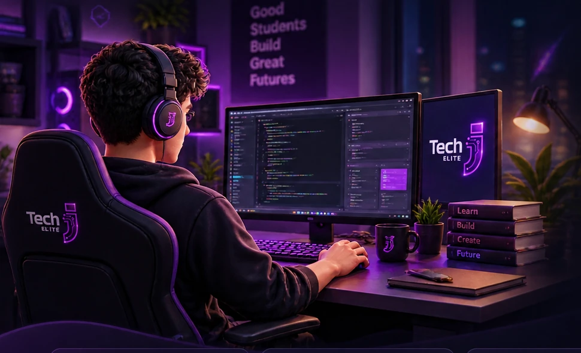

تخصص اليوم
لصنّاع المستقبل.
تقنية المعلومات أكثر من مجرد تخصص جامعي، إنها لغة المستقبل. من هنا صنعت دفعة Tech Elite بوابة تجمع تعريف تخصص IT وخطة البكالوريوس والملازم ومصادر كل مادة، لتبقى المعرفة في متناول الأجيال القادمة.

بوابتك إلى عالم تقنية المعلومات
الموقع مصمم ليرافقك في جميع مراحل الرحلة، من فهم التخصص إلى الوصول للمصادر والمشاريع.
اكتشف تخصصك
تعرف على طبيعة IT والمجالات التي يمكنك التعمق فيها.
استكشف القسم ←خطة البكالوريوس
رتّب رحلتك الأكاديمية حسب المستوى والفصل والمقرر.
استكشف القسم ←مكتبة المواد
مصادر موثوقة وروابط للتعلم منظمة لكل مقرر.
استكشف القسم ←ذاكرة Tech Elite
رحلتنا وإنجازاتنا ووصيتنا للدفعات القادمة.
استكشف القسم ←ما هو تخصص تقنية المعلومات؟
يهتم تخصص IT باستخدام الأجهزة والبرمجيات والشبكات والبيانات لبناء حلول تقنية وإدارة الأنظمة وحمايتها. سيتعرف الطالب من خلال هذه المنصة على المجالات والمهارات الأساسية ومسارات التعلّم.
⌘ تطوير البرمجيات
تعلم أساسيات البرمجة وبناء تطبيقات الويب والجوال.
⌁ الشبكات والأنظمة
فهم الاتصال والبنية التحتية وإدارة الخدمات التقنية.
▥ قواعد البيانات
تصميم البيانات وإدارتها وتحويلها إلى معلومات مفيدة.
الخطة الدراسية للبكالوريوس
هنا ستظهر الخطة الرسمية كاملة، مرتبة حسب المستوى والفصل الدراسي بعد استلام رابطها من موقع الجامعة.
كل مادة، كل مصادرها في مكان واحد
الملازم والملخصات والفيديوهات والبرامج والنماذج والروابط التعليمية، كلها تظهر تحت المادة المناسبة. المصادر التالية أمثلة تعليمية موثوقة وليست ملازم رسمية لجامعتكم.
📄 ملازم ومحاضرات
ملفات PDF للمادة بعد توفيرها والسماح بنشرها.
بانتظار ملفات الدفعةقصتنا نحن، Tech Elite
مساحة لتوثيق الرحلة الجامعية والمشاريع والإنجازات والصور وكلمة الدفعة، لتكون شهادة على أثر الطلاب وتعاونهم.
حكايتنا لم تنتهِ بالتخرج.
معرفة تُشارك. خبرة تُورث. أثر يستمر.
العودة للرئيسية ↑LEGACY.